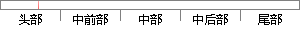

数据集上预训练一个模型。
片段位置图

相似结果|
相似片段 1：的检验过程是使用那些没有用来训练的输入／输出数据，来比较我们训练过的模型是否能够很好地匹配和预测这些数据对。这个过程通常是山图形化地ANF]S编辑工具anfisedit使用一个称为测试数据集
相似片段 2：统一模型方案在第一章中已有提到，统一模型方案的关键就是多个微电网负荷数据进行处理后训练得到一个模型，并非每个数据有相对应的模型，并用这个模型来对所有微电网的测试数据进行预测，并获得良好的预测结果
相似片段 3：若程序判断一个数据生成器里面没有数据或拥有的数据已不能形成一个 batch，则说明这个 epoch 已经完成。74设定初始配置，如给出训练集和验证集的纯净语音和噪声路径、训练模型的身份标志
相似片段 4：3．训练方法网络模型的训练方式主要有以下四种：171．逐个数据训练。一个接着一个的把输入数据提供给神经网络模型，然后单个应用反向传播算法对网络模型进行训练，直到达到比较理想的程度后才进行下一个数据
相似片段 5：本文数据集数据集进行训练。（2）读取预训练模型和数据集进行训练，本文采用动态学习率和提前停止训练，如果模型的预测结果在一个固定轮次训练后均没有提高，视为模型已收敛，即可停止训练。（3）由于本文所训练
相似片段 6：高精度的机器学习模型是一个试错的过程，需要对模型进行重复训练。如图3?4所示，一个模型通常会被反复训练多次，以便验证数据预处理 [94]、超参调节 [89]及模型结构调整 [95]后的效果，并根据验证
相似片段 7： 20%的数据用于测试。② 预训练模型一般而言，预训练模型（Pre-trained model）是早期的研究者为了解决相似的问题而研究出来的模型。因此在解决有相似问题的情况时，可以不用从头开始重新训练一个
相似片段 8：的先后顺序，也就是说当一个计算节点训练完一部分后，需要将训练后的结果反馈给另一个计算节点，另一个计算节点只有接受到反馈后才能继续训练。模型并行框架图如图 5-4 所示：图 5-4 模型并行框架图数据
相似片段 9：的预测性能就会变差。训练数据太长，训练数据的内部差异性太大，与预钡《数据不符合f．i．d假设，模型训练就偏离预测数据，预测性能也会变差。时间段长度和本文的假设有关系，我们假设预测时间在一个短时间内是一个
相似片段 10：因为原始语音数据学习的效果比数据增强后的语音数据更好，所以本文将原始语音数据集训练的模型作为预训练模型，再加入数据增强后的音频数据进行继续训练。5.2 基于模型参数预训练的数据增强训练Bucila
|
※ 片段修改建议 ※
近似词参考：- 训练：练习
- 模型：模子
系统自动生成语句：数据集上预练习一个模子。
注：本片段修改建议为系统自动生成，仅供参考。